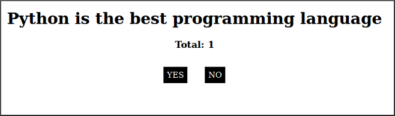
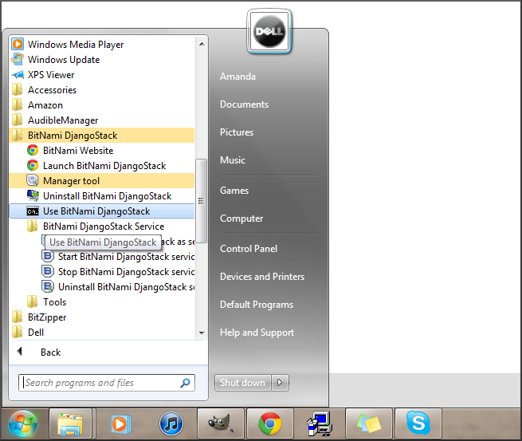

Interactive Poll¶
A step-by-step guide for building an interactive poll. Based on an application designed by Aron Pilhofer, it has been adapted here by Ben Welsh.
To see a working demonstration of what you’ll be building, visit http://palewi.re/nicar/polls/1/
Prelude: Hello Django¶
Before you you can begin work, you need to get your Django environment up and flying. If you havn’t done it already, follow one of our getting started guides.
If you elected to install Bitnami for Windows, you’ll need to fire it up by clicking “Use Bitnami DjangoStack” in the start menu. That should bring up a terminal where you can being work.
Act 1: Hello Database¶
First, create your Django project
$ django-admin.py startproject interactive_poll
Jump and start it up for the first time
$ cd interactive_poll
$ python manage.py runserver
If you visit http://localhost:8000 in your browser, you should see Django’s “Hello World” page, indicating that you’ve got everything properly configured and are ready to begin work.
Then you start in on your app by first settings your database connection. For this app, we’ll be creating a Sqlite database.
In your settings.py file, replace the default database configuration with:
DATABASES = {
'default': {
'ENGINE': 'django.db.backends.sqlite3',
'NAME': 'database.db'
}
}
Then back in your shell run the following command to create your database. When it asks, be sure to create a superuser. We’ll need it later.
$ python manage.py syncdb
Now we will create an “application”, Django slang for a package of code. We’ll call it “polls.”
$ python manage.py startapp polls
You’ll now find a folder called “polls” where we’ll be building our app. The models file is where we define our database tables. Go in there and add the following to the models.py file, which will act as the blueprint for two new tables.
from django.db import models
class Poll(models.Model):
"""
A poll we ask users to vote on.
"""
title = models.CharField(max_length=200)
pub_date = models.DateTimeField()
class Vote(models.Model):
"""
A yes or no vote.
"""
poll = models.ForeignKey(Poll)
choice = models.IntegerField()
Now return do the settings.py file and add a line to the INSTALLED_APPS list with the name of our new app.
INSTALLED_APPS = (
'django.contrib.auth',
'django.contrib.contenttypes',
'django.contrib.sessions',
'django.contrib.sites',
'django.contrib.messages',
'django.contrib.staticfiles',
# Uncomment the next line to enable the admin:
# 'django.contrib.admin',
# Uncomment the next line to enable admin documentation:
# 'django.contrib.admindocs',
'polls',
)
Sync your database again and your new tables will be created in the database.
$ python manage.py syncdb
Act 2: Hello Admin¶
Go back into settings.py and uncomment “django.contrib.admin” in INSTALLED_APPS
INSTALLED_APPS = (
'django.contrib.auth',
'django.contrib.contenttypes',
'django.contrib.sessions',
'django.contrib.sites',
'django.contrib.messages',
'django.contrib.staticfiles',
# Uncomment the next line to enable the admin:
'django.contrib.admin',
# Uncomment the next line to enable admin documentation:
# 'django.contrib.admindocs',
'polls',
)
Sync the database to create the admin’s set of tables.
$ python manage.py syncdb
Now go into the urls.py file and uncomment the lines related to the admin, look like so
from django.conf.urls.defaults import patterns, include, url
# Uncomment the next two lines to enable the admin:
from django.contrib import admin
admin.autodiscover()
urlpatterns = patterns('',
# Examples:
# url(r'^$', 'interactive_poll.views.home', name='home'),
# url(r'^interactive_poll/', include('interactive_poll.foo.urls')),
# Uncomment the admin/doc line below to enable admin documentation:
# url(r'^admin/doc/', include('django.contrib.admindocs.urls')),
# Uncomment the next line to enable the admin:
url(r'^admin/', include(admin.site.urls)),
)
Now fire up the runserver,
$ python manage.py runserver
And now log in at http://localhost:8000/admin/, where you’ll see Django’s generic administration system. But you’ll notice that your app’s database tables aren’t in there.
To add them, create a file called admin.py in the “polls” folder and add the following.
from polls.models import Poll, Vote
from django.contrib import admin
admin.site.register(Poll)
admin.site.register(Vote)
Now, if you visit http://localhost:8000/admin/ again you should find administration panels for entering data into the poll’s database tables.
For the purposes of this demonstration, I created a poll with the title “Python is the best programming language”. When we finish our site, users will be able vote up or down my claim. Feel free to insert your own title, but drop one or two in there, and check the active flag, so we have something to work with.
You’ll notice that the lists in the database have boring names for each entry. To fix that, jump back into models.py and add a string representation of your object to the model Poll.
from django.db import models
class Poll(models.Model):
"""
A poll we ask users to vote on.
"""
title = models.CharField(max_length=200)
pub_date = models.DateTimeField()
def __unicode__(self):
return self.title
class Vote(models.Model):
"""
A yes or no vote.
"""
poll = models.ForeignKey(Poll)
choice = models.IntegerField()
Act 3: Hello Internets¶
First, lets create an new url that will serve as our site’s homepage, often called an “index” page by Internet geeks.
from django.conf.urls.defaults import patterns, include, url
# Uncomment the next two lines to enable the admin:
from django.contrib import admin
admin.autodiscover()
urlpatterns = patterns('',
# Examples:
url(r'^$', view='polls.views.index', name='polls_index_view'),
# url(r'^interactive_poll/', include('interactive_poll.foo.urls')),
# Uncomment the admin/doc line below to enable admin documentation:
# url(r'^admin/doc/', include('django.contrib.admindocs.urls')),
# Uncomment the next line to enable the admin:
url(r'^admin/', include(admin.site.urls)),
)
Open up views.py in the polls folder and add all of the following.
from polls.models import Poll
from django.shortcuts import render
def index(request):
"""
A list of the five most recent polls.
"""
poll_list = Poll.objects.all().order_by('-pub_date')[:5]
return render(request, 'index.html', {
'poll_list': poll_list
})
Create a “templates” folder inside the “polls” folder and then create an index.html file in there. Add the following.
<ul>
{% for object in poll_list %}
<li><a href="/polls/{{ object.id }}/">{{ object.title }}</a></li>
{% empty %}
<p>No polls are available.</p>
{% endfor %}
</ul>
Now fire up the runserver and watch it fly in your browser at http://localhost:8000.
$ python manage.py runserver
Now create a detail page by adding the same set of an url, view and template. First the url.
from django.conf.urls.defaults import patterns, include, url
# Uncomment the next two lines to enable the admin:
from django.contrib import admin
admin.autodiscover()
urlpatterns = patterns('',
# Examples:
url(r'^$', view='polls.views.index', name='polls_index_view'),
url(r'^polls/(?P<poll_id>\d+)/$', view='polls.views.detail',
name='polls_detail_view'),
# Uncomment the admin/doc line below to enable admin documentation:
# url(r'^admin/doc/', include('django.contrib.admindocs.urls')),
# Uncomment the next line to enable the admin:
url(r'^admin/', include(admin.site.urls)),
)
Then the view.
from django.db.models import Sum
from polls.models import Poll
from django.shortcuts import render
def index(request):
"""
A list of the five most recent polls.
"""
poll_list = Poll.objects.all().order_by('-pub_date')[:5]
return render(request, 'index.html', {
'poll_list': poll_list
})
def detail(request, poll_id):
"""
A page where you vote on a particular poll.
"""
p = Poll.objects.get(pk=poll_id)
total = p.vote_set.aggregate(sum=Sum('choice'))
return render(request, 'detail.html', {
'poll': p,
'total': total['sum'] or 0,
'request': request,
})
Add a detail.html template.
<html>
<head>
<script type="text/javascript" src="https://ajax.googleapis.com/ajax/libs/jquery/1.6.4/jquery.min.js"></script>
<style type="text/css">
h3 {margin-bottom:40px;}
.button { display:inline; background-color: black; color:white; padding:7px; margin: 0 15px; cursor:pointer; }
.button:hover { background-color:#CCC; }
</style>
</head>
<body>
<div align="center">
<h1 id="title">{{ poll }}</h1>
<h3 id="total">Total: {{ total }}</h3>
<div>
<div id="yes" class="button">YES</div>
<div id="no" class="button">NO</div>
</div>
</div>
</body>
</html>
That’s great, but you can’t vote yet. To do that you’ll need another url and view where votes get handled. First the url.
from django.conf.urls.defaults import patterns, include, url
# Uncomment the next two lines to enable the admin:
from django.contrib import admin
admin.autodiscover()
urlpatterns = patterns('',
# Examples:
url(r'^$', view='polls.views.index', name='polls_index_view'),
url(r'^polls/(?P<poll_id>\d+)/$', view='polls.views.detail',
name='polls_detail_view'),
url(r'^polls/(?P<poll_id>\d+)/vote/$', view='polls.views.vote',
name='polls_vote_view'),
# Uncomment the admin/doc line below to enable admin documentation:
# url(r'^admin/doc/', include('django.contrib.admindocs.urls')),
# Uncomment the next line to enable the admin:
url(r'^admin/', include(admin.site.urls)),
)
Then then view.
from django.db.models import Sum
from polls.models import Poll
from django.shortcuts import render
from django.http import HttpResponse
from django.shortcuts import get_object_or_404
from django.views.decorators.csrf import csrf_exempt
def index(request):
"""
A list of the five most recent polls.
"""
poll_list = Poll.objects.all().order_by('-pub_date')[:5]
return render(request, 'index.html', {
'poll_list': poll_list
})
def detail(request, poll_id):
"""
A page where you vote on a particular poll.
"""
p = Poll.objects.get(pk=poll_id)
total = p.vote_set.aggregate(sum=Sum('choice'))
return render(request, 'detail.html', {
'poll': p,
'total': total['sum'] or 0,
'request': request,
})
@csrf_exempt
def vote(request, poll_id):
"""
The hidden url where votes are sent
to be added to the database.
"""
p = get_object_or_404(Poll, pk=poll_id)
data = request.POST.get("data", None)
if not data:
return HttpResponse(status=405)
if data == "-1":
value = -1
else:
value = 1
v = p.vote_set.create(choice=value)
v.save()
return HttpResponse(status=200)
Then add some JavaScript to the detail template where the page can interact with the database using this new view.
<html>
<head>
<script type="text/javascript" src="https://ajax.googleapis.com/ajax/libs/jquery/1.6.4/jquery.min.js"></script>
<style type="text/css">
h3 {margin-bottom:40px;}
.button { display:inline; background-color: black; color:white; padding:7px; margin: 0 15px; cursor:pointer; }
.button:hover { background-color:#CCC; }
</style>
</head>
<body>
<div align="center">
<h1 id="title">{{ poll }}</h1>
<h3 id="total">Total: {{ total }}</h3>
<div>
<div id="yes" class="button">YES</div>
<div id="no" class="button">NO</div>
</div>
</div>
<script type="text/javascript">
var currentTotal = {{ total }};
var vote = function(data) {
$.ajax({
type: 'POST',
url: 'http://{{ request.get_host }}/polls/{{ poll.id }}/vote/',
data: {'data': data}
});
currentTotal += data;
$("#total").html("Total: " + currentTotal.toString());
};
$("#yes").click(function() {
vote(1);
});
$("#no").click(function () {
vote(-1);
});
</script>
</body>
</html>
Now reload the page and it should all work. You did it!